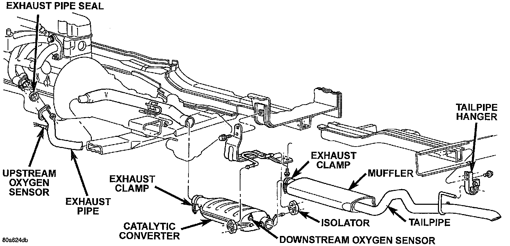
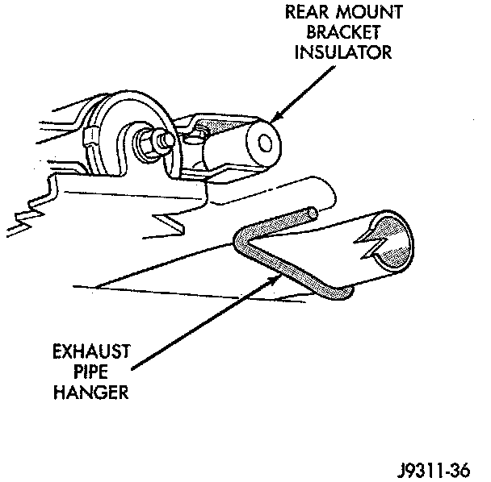

Exhaust Pipe Replacement
WARNING: IF TORCHES ARE USED WHEN WORKING ON THE EXHAUST SYSTEM, DO NOT ALLOW THE FLAME NEAR THE FUEL LINES.REMOVAL
1. Raise and support the vehicle.
2. Saturate the bolts and nuts with heat valve lubricant. Allow 5 minutes for penetration.

3. Remove the oxygen sensor from the exhaust pipe.
4. Disconnect the exhaust pipe from the engine exhaust manifold. Discard the exhaust manifold seal.
a. Heat the exhaust pipe and catalytic converter connection with an torch until the metal becomes cherry red.
b. While the metal is still cherry red, twist the exhaust pipe back and forth to separate it from the catalytic converter.
5. Remove the exhaust clamp from the exhaust pipe and catalytic converter connection. Disconnect the exhaust pipe from the catalytic converter. If needed:

6. Disconnect the exhaust pipe hanger from the rear mount bracket insulator.
7. Remove the exhaust pipe.
INSTALLATION
1. Position the exhaust pipe onto the catalytic converter.
2. Connect the exhaust pipe hanger to the rear mount bracket insulator.
3. Install a new seal between the exhaust pipe and the engine exhaust manifold. Connect the exhaust pipe to the engine exhaust manifold. Tighten the nuts to 31 Nm (23 ft. lbs.) torque.
4. Position the exhaust clamp over the exhaust pipe/catalytic converter connection. Tighten the nuts to 61 Nm (45 ft. lbs.) torque.
5. Coat the oxygen sensor with anti-seize compound. Install the sensor and tighten the nut to 48 Nm (35 ft. lbs.) torque.
6. Lower the vehicle.
7. Start the engine and inspect for exhaust leaks and exhaust system contact with the body panels. Adjust the alignment, if needed.
8. After initial start-up, check the engine exhaust manifold to exhaust pipe nuts for proper torque.